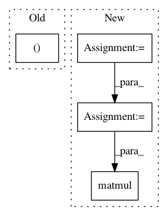

d1ac7b831ad36cd0e4bdd7980819f83208345148,gpflow/expectations.py,,_expectation,#Any#Any#Any#Any#Any#,633
Before Change
Xmu = tf.identity(Xmu)
N = tf.shape(Xmu)[0] - 1
Xmum = Xmu[:-1, :]
Xmup = Xmu[1:, :]
op = tf.expand_dims(Xmum, 2) * tf.expand_dims(Xmup, 1) + Xcov[1, :-1, :, :] // NxDxD
return kern.variance * tf.matmul(tf.tile(tf.expand_dims(Z, 0), (N, 1, 1)), op)
After Change
with params_as_tensors_for(kern), params_as_tensors_for(feat):
N = tf.shape(Xmu)[0] - 1
var_Z = kern.variance * feat.Z // MxD
tiled_Z = tf.tile(tf.expand_dims(var_Z, 0), (N, 1, 1)) // NxMxD
eXX = Xcov[1, :-1] + (Xmu[:-1][..., None] * Xmu[1:][:, None, :]) // NxDxD
return tf.matmul(tiled_Z, eXX)
@dispatch((Gaussian, DiagonalGaussian), kernels.Linear, InducingPoints, kernels.Linear, InducingPoints)
def _expectation(p, kern1, feat1, kern2, feat2):
In pattern: SUPERPATTERN
Frequency: 4
Non-data size: 4
Instances
Project Name: GPflow/GPflow
Commit Name: d1ac7b831ad36cd0e4bdd7980819f83208345148
Time: 2018-02-07
Author: alex.ialongo@gmail.com
File Name: gpflow/expectations.py
Class Name:
Method Name: _expectation
Project Name: cornellius-gp/gpytorch
Commit Name: e8a945606e0b3dafe71ce2f1bf1b52ab3b05428c
Time: 2021-02-10
Author: wjm363@nyu.edu
File Name: gpytorch/lazy/kronecker_product_added_diag_lazy_tensor.py
Class Name: KroneckerProductAddedDiagLazyTensor
Method Name: _solve
Project Name: geomstats/geomstats
Commit Name: cb3c3798eabae57bab06227d0e77687c14bf099b
Time: 2018-11-21
Author: ninamio78@gmail.com
File Name: geomstats/stiefel.py
Class Name: StiefelCanonicalMetric
Method Name: inner_product
Project Name: GPflow/GPflow
Commit Name: bd1e9c04b48dd5ccca9619d5eaa2595a358bdb08
Time: 2020-01-31
Author: st--@users.noreply.github.com
File Name: gpflow/kernels/misc.py
Class Name: ArcCosine
Method Name: K_diag